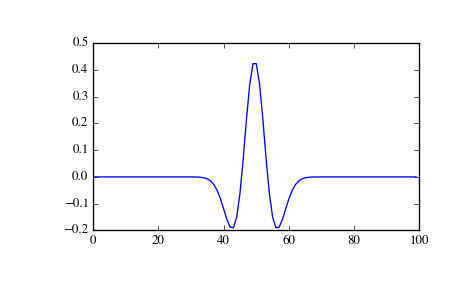

scipy.signal.ricker¶
- scipy.signal.ricker(points, a)[source]¶
Return a Ricker wavelet, also known as the “Mexican hat wavelet”.
It models the function:
A (1 - x^2/a^2) exp(-x^2/2 a^2),where A = 2/sqrt(3a)pi^1/4.
Parameters: points : int
Number of points in vector. Will be centered around 0.
a : scalar
Width parameter of the wavelet.
Returns: vector : (N,) ndarray
Array of length points in shape of ricker curve.
Examples
>>> from scipy import signal >>> import matplotlib.pyplot as plt
>>> points = 100 >>> a = 4.0 >>> vec2 = signal.ricker(points, a) >>> print(len(vec2)) 100 >>> plt.plot(vec2) >>> plt.show()
